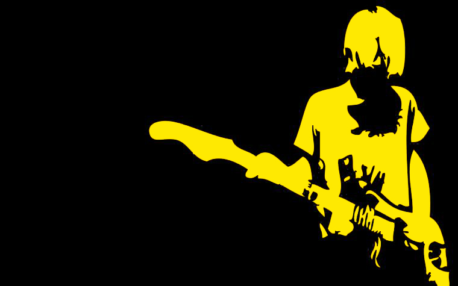
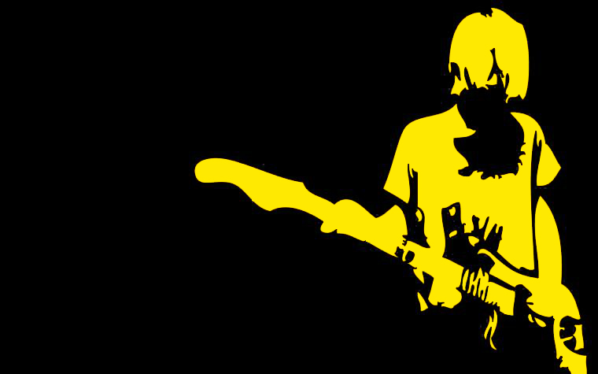
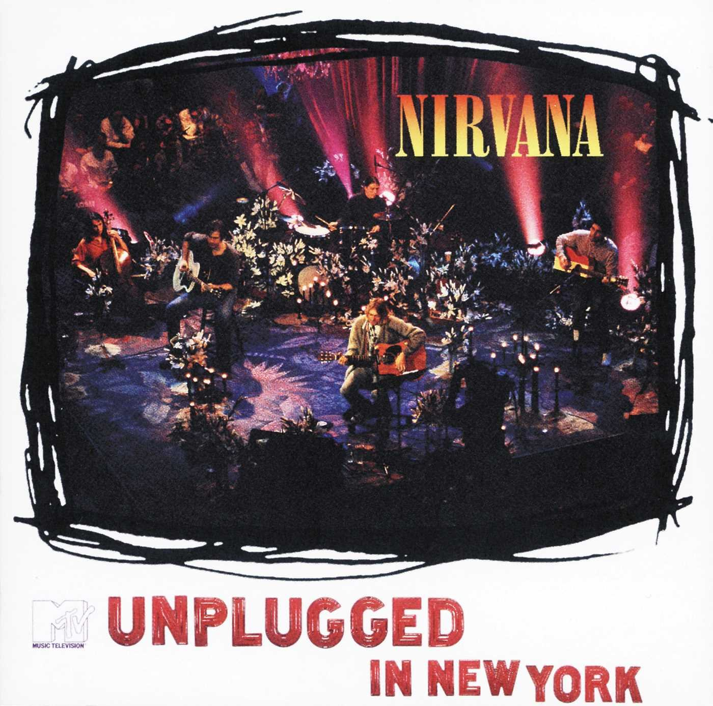

- Kurt Cobain (Leadgesang, Gitarre)
- Dave Grohl (Backgroundgesang, Schlagzeug)
- Krist Novoselic (Bass)
 

“Wanting to be someone else is a waste of who you are”
Von Sänger und Gitarrist Kurt Cobain und Bassist Krist Novoselic 1987 gegründet, zählten Nirvana zu den bekanntesten Bands des Grunge-Genres. Schlagzeuger Dave Grohl stieß 1990 hinzu und vervollständigte das für die Band charakteristische Trio-Line-Up. Mit ihrem Album „Nevermind“ (1991) konnten sie Grunge als kommerziellen Musikstil etablieren und feierten mit der Single „Smells Like Teen Spirit“ internationale Erfolge. 1994 beging Kurt Cobain Selbstmord und setzte Nirvanas Karriere dadurch ein jähes Ende.Mit ihrem Debütalbum „Bleach“, das 1989 auf dem unabhängigen Plattenlabel Sub Pop erschien, gelang es Nirvana, im Punk- und Indie-Underground auf sich aufmerksam zu machen. Die Band erhielt einen Vertrag bei Geffen Records, deren Vermarktung maßgeblich zum Erfolg ihres zweiten Werks „Nevermind“ aus dem Jahr 1991 beitrug. Nach wenigen Wochen war die Nachfrage so hoch, dass das Album nachgepresst werden musste. Als Platin-Album verdrängte es „Dangerous“ von Michael Jackson vom ersten Platz der US-Charts, was als bemerkenswerter Erfolg einer Underground-Band gegen den „King Of Pop“ erachtet wurde.
Nachdem 1992 „Bleach“ wiederveröffentlicht wurde, fiel Kurt Cobain vor allem durch die skandalöse Ehe mit Sängerin Courtney Love auf. Obendrein hatte er mit seiner Drogensucht zu kämpfen, die Festnahmen und Rehabilitationsversuche zur Folge hatte. 1993 veröffentlichten Nirvana ihr letztes Studioalbum „In Utero“, das sich durch ein experimentelles Klangbild auszeichnete. Das Trio verweigerte sich eingängigen Songstrukturen und arbeitete mit verschrobenen Arrangements und Sounds. Trotzdem landete „In Utero“ sowohl in den USA als auch in Europa auf Anhieb an der Spitze der Albumcharts.
1993 nahmen Nirvana für die Reihe „MTV Unplugged“ ein akustisches Konzert auf, das im Oktober 1994 ausgestrahlt und als Tonträger veröffentlicht wurde. Heute gilt es als einer der bekanntesten Auftritte der Band und es wurden vom dazugehörigen Album mehr als fünf Millionen Exemplare verkauft.
Nach Cobains‘ Selbstmord 1994 lösten sich Nirvana auf. Bis heute werden die Alben der Band ausgezeichnet und geehrt. Mit ihrem Erfolg in der Independent-Musik-Szene gelten Nirvana als kommerzieller Wegbereiter des Grunge und Rock und prägten diese Genres maßgeblich. Mit über 50 Millionen verkauften Alben gehören sie zu den wichtigsten Rockbands der Neunziger. Die Band verkaufte ca. 75 Millionen Tonträger.
Bandmitglieder
| Albumcover | Titel | Erscheinungsjahr |
|---|---|---|
 | Nevermind | 1991 |
 | In Utero | 1993 |
 | Bleach | 1989 |
 | Incesticide | 1992 |
 | From the Muddy Banks of the Wishkah | 1996 |
|  | MTV Unplugged in New York | 1994 |